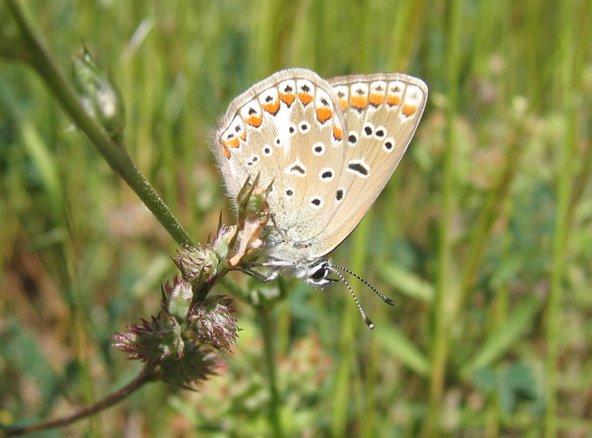
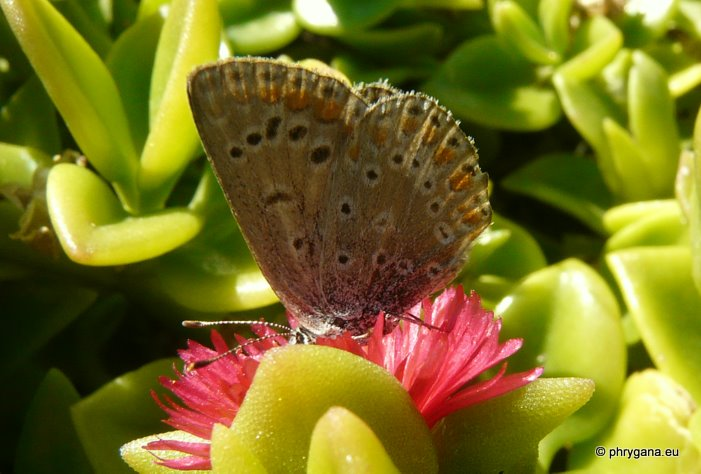

| PHRYGANA | Fauna | Flora |
additions nouveautés |
espèces species |
contact -
info - commentaires phrygana1 (at) gmail.com |
| diversité crétoise -- Cretan diversity | Galles et mines | ||||
| Polyommatus (Polyommatus) icarus (Rottemburg 1775) |
| 152 | Fauna | LYCAENIDAE | Polyommatinae | Polyommatus Latreille 1804 |
 Polyommatus icarus Melambes (Agios Giorgos) 06 avril 2008 |
| fr: l'Azuré commun en: Common blue de: Hauhechel-Bläuling nl: Icarusblauwtje | |
| Adulte: envergure de 28 à 36 mm. Couleur de fond du mâle sur le dessus bleue. La femelle est généralement brun sombre. Dessous généralement brun. | |
| Chenille trouvée entre fin mars et novembre. Oeufs déposés isolément sur les tiges et les feuilles de la plante-hôte. L'incubation dure quelque 6 - 7 jours. | |
| La chenille est oligophage: diverses Fabaceae. | |
| Espèce plurivoltine (2 à 3 générations): période de vol en mars avril mai juin juillet août septembre octobre | |
| Statut en Crète: indigène | |
| Biotopes en Crète: phrygana, pelouses sèches, bords des chemins, vieilles olivaies, talus arides, steppes, pelouses. | |
| Altitudes: 0 - 1000 (- 1500) m. | |
| Distribution: Europe centrale et méridionale, Moyen-Orient, Asie centrale, Chine | |
| Note: la chenille peut être cannibale. Mâles territoriaux. | |
|
 Polyommatus icarus Melambes (Agios Giorgos) 19 octobre 2011 |
| 31 octobre 2011 |
| © paul fontaine -- © Phrygana.eu 2007 -- 2013 |